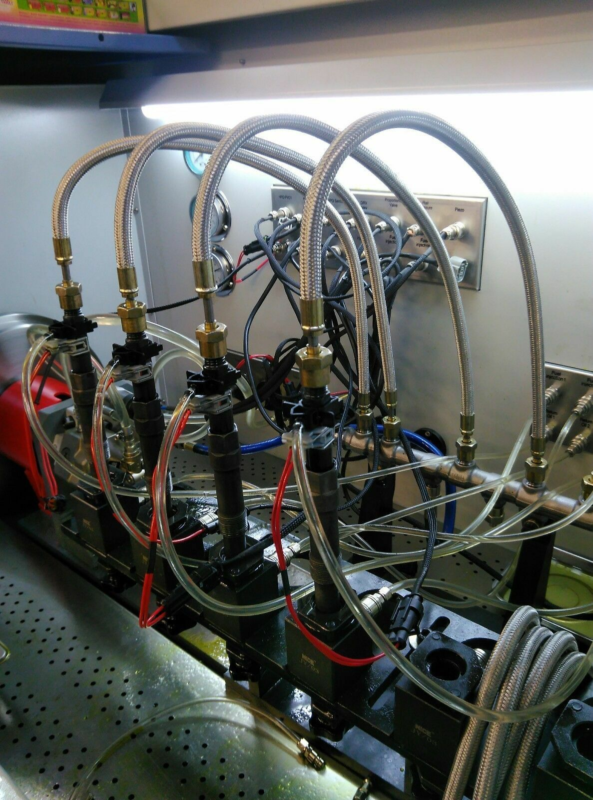

I have been working on various project involving design investigation and development of rotary fuel pump. Conducted investigation on manufacturing processes and gained great depth of manufacturing methodology and understanding. Gained hands on experience working on validation department where I disassembled a fuel pump to acknowledge the different component parts and assembled functionality. I have carried out injector system performance test – nozzle designs and performance, flow analysis and quality inspection. Continually working with cross-functional team to achieve common goal and efficiently best for the company business and maintaining customer relation and company awareness.
